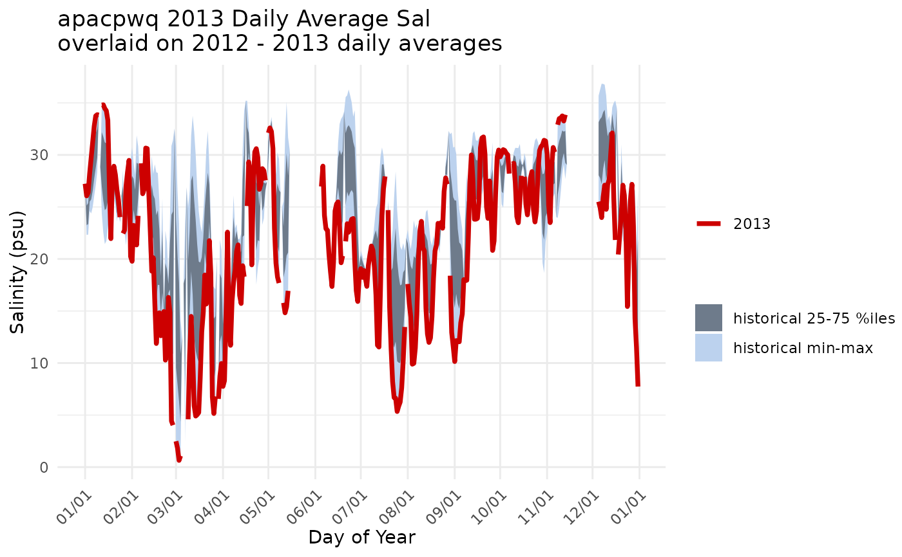
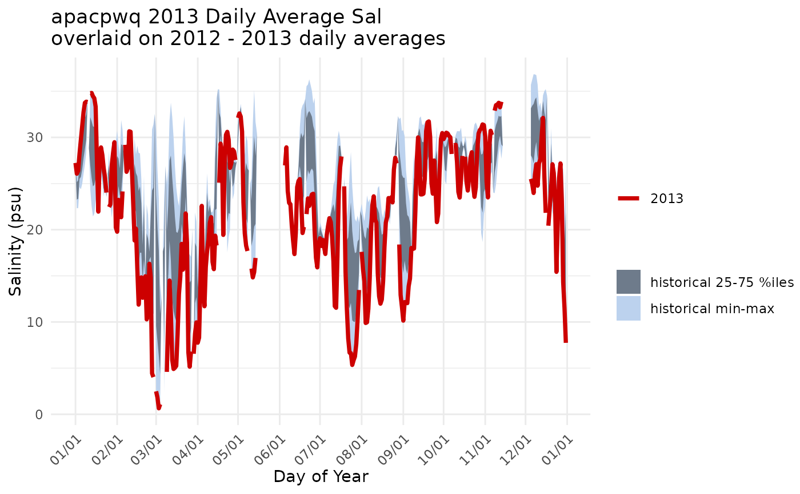

Create a plot of data for a single year overlaid on historical data.
Source:R/plot_quants.R
plot_quants.RdA line for a single year is plotted over ribbons ofquantiles for historical data.
Usage
plot_quants(swmpr_in, ...)
# S3 method for swmpr
plot_quants(
swmpr_in,
paramtoplot,
yr,
yrstart,
yrend,
yaxislab = NULL,
yrcolor = "red3",
bgcolor1 = "lightgray",
bgcolor2 = "gray65",
maintitle = NULL,
...
)Arguments
- swmpr_in
input swmpr object.
- ...
additional arguments passed to or from other methods
- paramtoplot
chr string of parameter to plot
- yr
numeric of year to feature as a line on the plot
- yrstart
numeric of year to begin range of comparison data
- yrend
numeric of year to end range of comparison data
- yaxislab
chr string for y-axis albel. Default is
paramtoplot.- yrcolor
chr string of line color for year of interest
- bgcolor1
chr string of color for outer 50% of data range
- bgcolor2
chr string of color for middle 50% of data range.
- maintitle
chr string of plot title. Default pastes together site name, parameter name, year to feature, and range of years to use for comparison, e.g. 'GNDBHWQ 2017 Daily Average Temp overlaid on 2006-2016 daily averages'.
Value
A a ggplot2 object.
Details
The plot is based on aggregates of daily average values for the entire time series. Quantiles (min, 25%, 75%, max) for each individual calendar day (01/01, 01/02, ... 12/31) are used to generate a ribbon plot of historical data and the selected year in yr is plotted as a line over the ribbon for historical context.
required packages: dplyr, lubridate, ggplot2, tibble
Examples
# qaqc
dat <- qaqc(apacpwq)
# generate a plot of salinity for 2013 overlaid on 2012-2013 data
plot_quants(dat, 'sal', yr = 2013, yrstart = 2012, yrend = 2013)
 # change some of the defaults
plot_quants(dat, 'sal', yr = 2013, yrstart = 2012, yrend = 2013,
bgcolor1 = 'lightsteelblue2', bgcolor2 = 'lightsteelblue4',
yaxislab = 'Salinity (psu)')

# change some of the defaults
plot_quants(dat, 'sal', yr = 2013, yrstart = 2012, yrend = 2013,
bgcolor1 = 'lightsteelblue2', bgcolor2 = 'lightsteelblue4',
yaxislab = 'Salinity (psu)')
